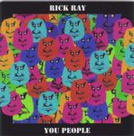

Home Artist links Label link

| Artist: | Rick Ray |
| Title: | You People |
| Label: | Neurosis Records |
| Length(s): | 60 minutes |
| Year(s) of release: | 1999 |
| Month of review: | 10/2000 |
Line up
Rick Ray - guitars, vocals, bass, percussion, rx8
Rick Schultz - clarinet
Tracks
| 1) | The Night Crawls In | 5.23
|
| 2) | The Dolphin Endorphin | 6.00
|
| 3) | Mental Block | 4.30
|
| 4) | You People | 9.42
|
| 5) | Pictures Of Darkness | 4.43
|
| 6) | Distorted Faces (part 2) | 4.58
|
| 7) | The City | 3.17
|
| 8) | The Nasties Are Coming | 4.35
|
| 9) | The Big Bad Wolves | 4.20
|
| 10) | Talk To Me | 4.15
|
| 11) | The Garden | 5.12
|
| 12) | Bizarre Spangled Banner | 3.05
|
Summary
Another one, number nine in fact.
The music
The opener Night Crawls In opens with spacey guitar and then becomes
rather up-tempo, close to driven. The sound and production are lo-fi as always
and Ray's vocals are not so good, but they fit with the music. The nice
addition on this track is the doubling with the very low vocoded vocals and
there are some nice turns in the melodies as well. Schultz on his clarinet
adds some more sounds to this hodgepodge that to me sounds very noisy.
The music is based on blues rock, and the guitar dominates the spectrum, if
the vocals are not present. The Dolphin Endorphin (with such a title I am
expecting an instrumental) opens with a rhythm guitar and (programmed)
double bass drums. There's some variation here with different guitar dominated
passages alternating. The final part is more bouncy, a kind of stomping
space rock. On Mental Block we find Schultz again playing in tandem with
Ray. The music sounds a bit disjointed and notwithstanding the quick fingered
guitar parts (Ray IS quick on the guitar and tends to keep my attention well
with his playing) the music itself tends to plod on a bit, because that
is exactly what the drumcomputer is doing. Halfway the pace changes, giving
rise to a bit more melody but also gives the track a more easy-going nature,
and then the music goes on the become circus music for a while.
You People is with almost ten minutes by far the longest track. It is also
a track not written by Ray by himself, but was co-written with three others.
This track opens in, for Ray, epic style, but the riff basis is still
prominently there. Like in the previous track there are many abrupt breaks
and changes. Between all the noise I can sometimes here some very nice
acoustic guitar (later better audible) and the music is more melodic than it
seems at first. The clarinet is allowed its meandering solos in the middle
and unfortunately there are also some parts with some too obvious melodies.
The final part is mostly effects including some of Ray's clearer guitar
playing. Pictures Of Darkness is a slow hazy track with the rough voice
of Ray dominating and the clarinet of Schultz fluttering along and at the end
the effects are this time coming from the clarinet. A straightforward track
build only on the guitar solo, which is okay to me.
Halfway the tracks we continue with the shortish The City. Again plain rock
but the song has quite a memorably riff to open with. The vocal part is a bit
lame, the bass playing is quite groovy. The Nasties Are Coming continues the
downgoing line of The City: compared to the earlier tracks, the last two
tracks are much less interesting. The Big Bad Wolves sung by someone with
a very low voice (Ray with coding I would guess) is like its two predecessor
a rather tame track, but the melodies seem to be more to the point here.
Talk To Me is more involved again with some wah-wah guitar playing and more
active percussion. The meandering clarinet returns on The Garden, which
was written by it seems three members of the Ray family. A question answer
game between clarinet and guitar.Turns out to be quite nice in the end.
Bizarre Spangled Banner closes down the album. Yep, you guessed it,
a variation upon.
Conclusion
After nine albums I guess I've heard it all and if you've read the other
reviews you should have an idea by now: lo-fi underground rock dominated
by guitar and the not so pleasant vocals. A clarinet is used as a soloing
instrument, it is at least clear that Ray's style is something of his own.
On the whole is compositions are rather similar so after nine albums I guess
I've really heard it by now. The music can be both complex and quite
straightforward as well (but the solo's are usually quite intricate so if you
go for that and don't mind the sound quality...), and would generally not be
categorized as prog.
© Jurriaan Hage